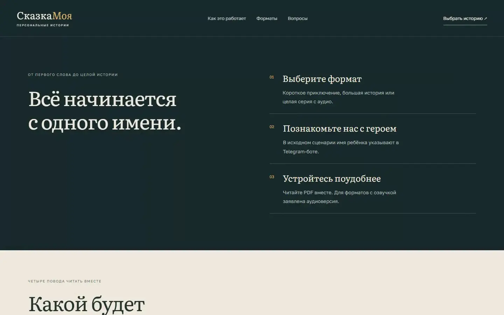
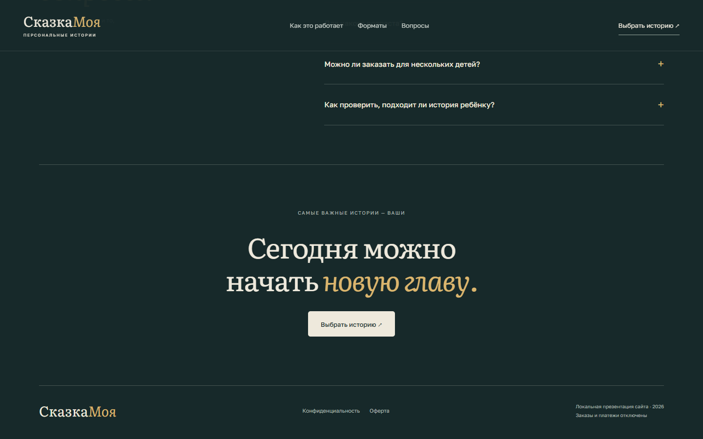
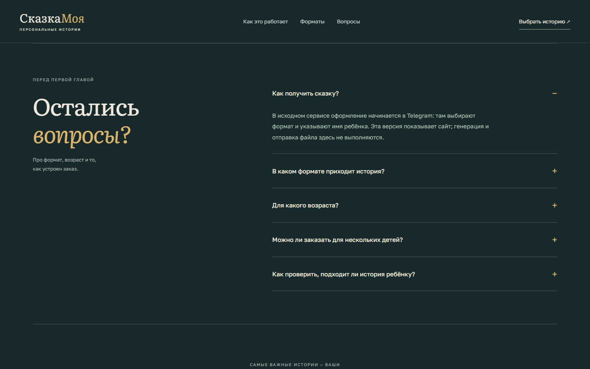
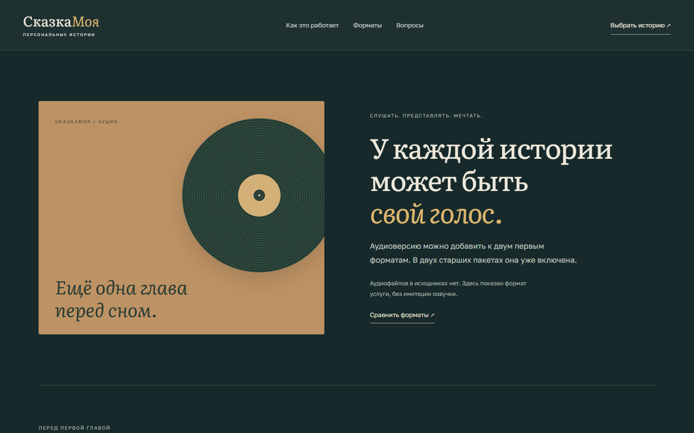
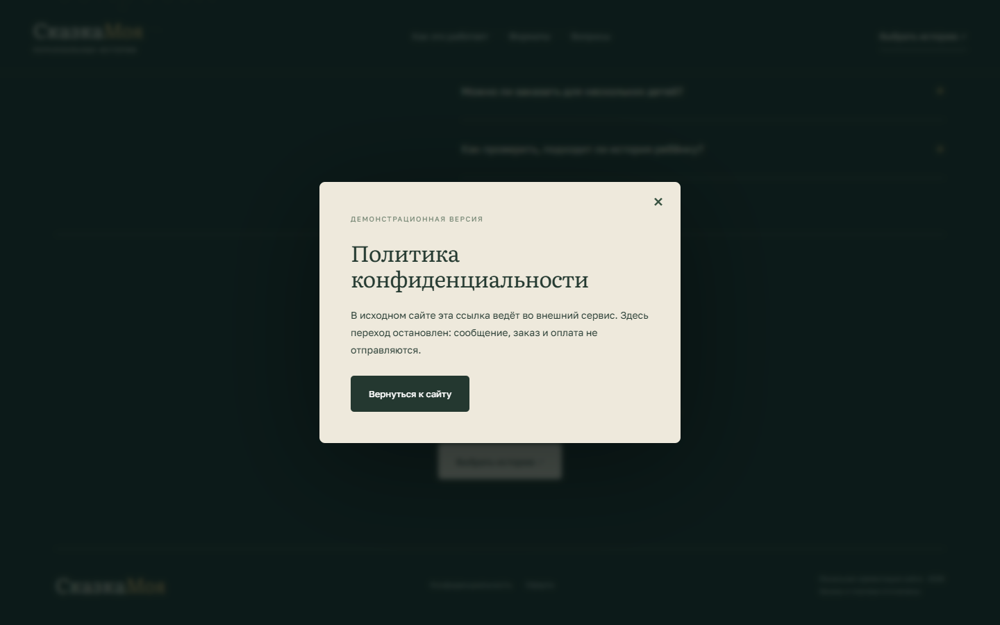

Выбрать формат
Страница сравнивает четыре исходных предложения без выдуманной популярности и скидок.

PERSONAL CHILDREN'S STORIES
Лендинг объясняет форматы персональной сказки и ведёт родителя к исходному Telegram-сценарию.
Главный герой уже найден.
Остаётся выбрать его приключение.



Страница сравнивает четыре исходных предложения без выдуманной популярности и скидок.
Родитель понимает, какие данные нужны, и продолжает реальный сценарий в Telegram.
FAQ и документы остаются доступны до перехода к заказу.

СказкаМоя показывает, из чего складывается персональная история, и ведёт к выбору формата заказа.
Родителю нужно понять формат будущей книги и как передать данные для заказа.
Собрал презентационный сайт с пакетами, примером оформления, FAQ и контактным действием.
Посетитель видит варианты и может перейти к запросу персональной сказки.
Родитель видит формат персональной книги и может перейти к заказу с понятными ожиданиями.